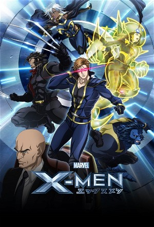

X-Men (2011)
ActionAdventureAnimationAnimeFantasyScience Fiction
| Year | 2011 |
|---|---|
| Rating | TV-14 |
| Status | Completed |
| Seasons | 2 |
| Episodes | 15 |
| Genre | Action, Adventure, Animation, Anime, Fantasy, Science Fiction |
The X-Men are reunited following the death of a teammate, and are summoned by Charles Xavier to Japan following the abduction of Hisako Ichiki (Armor). There, they confront the U-Men, a lunatic cult that steals and transplants mutant organs to further strengthen their own army, and the battle for justice is on.
Episodes
Specials
| # | Title | Air Date | Synopsis |
|---|---|---|---|
| 1 | The Marvel Universe: Re-Examining The X-Men | — | |
| 2 | X-Men: A Team Of Outsiders | — | |
| 3 | Special Talk Session: Marvel Anime's X-Men And Blade | — |
Season 1
| # | Title | Air Date | Synopsis |
|---|---|---|---|
| 1 | The Return (Joining Forces) | 2011-04-01 | Professor X summons the team to reassemble to rescue a fellow mutant in Japan in the opener of the anime series following the adventures of a group of superheroes. |
| 2 | U-Men (Mutant Hunting) | 2011-04-08 | The X-Men learn of a second mutant kidnapping, and they step into the trap of an anti-mutant group. |
| 3 | Armor (Awakening) | 2011-04-15 | Professor X runs tests on Emma Frost out of concern for her safety after learning that the mutants that were captured by the U-Men are forming secondary powers. |
| 4 | Transformation (Secondary Mutation) | 2011-04-22 | Emma Frost joins the X-Men; Hisako begins training; Professor X probes Emma Frost's mind to explore her past. |
| 5 | Power (Unity) | 2011-04-29 | The X-Men return to Japan to probe the site where mysterious secondary mutations have occurred. |
| 6 | Conflict (Contested) | 2011-05-13 | An unknown foe rises as Wolverine, Storm and Beast investigate the Blackbird. |
| 7 | Betrayal (Shock) | 2011-05-20 | The X-Men battle a giant monster that turns out to be a transformed research assistant. |
| 8 | Lost (Signs) | 2011-05-27 | Yui's experimental drug fails to stop the mutant gene from awakening. |
| 9 | Revelations (From Behind The Scenes) | 2011-06-03 | The X-Men best Hedgehog and follow Marsh and Mastermind deeper into Yui's laboratory. |
| 10 | Countdown (Truth) | 2011-06-10 | Marsh traps Emma Frost, Hisako and Yui; Neuron subdues Wolverine and Beast; Hisako reflects on a mutant who went into hiding. |
| 11 | Revenge (End) | 2011-06-17 | Professor X summons the X-Men to protect humanity as the world is on the brink of destruction. |
| 12 | Destiny (Bond) | 2011-06-24 | On the brink of world destruction, Charles reaches out to all the X-Men, other mutants and heroes around the world asking them to support one another and protect humanity. |